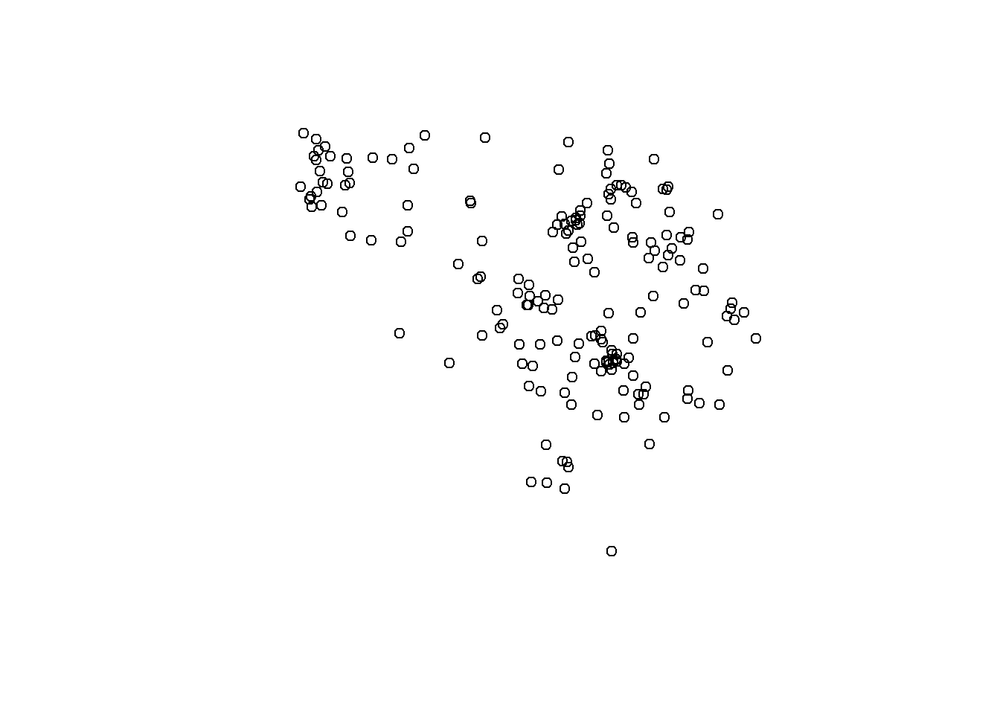
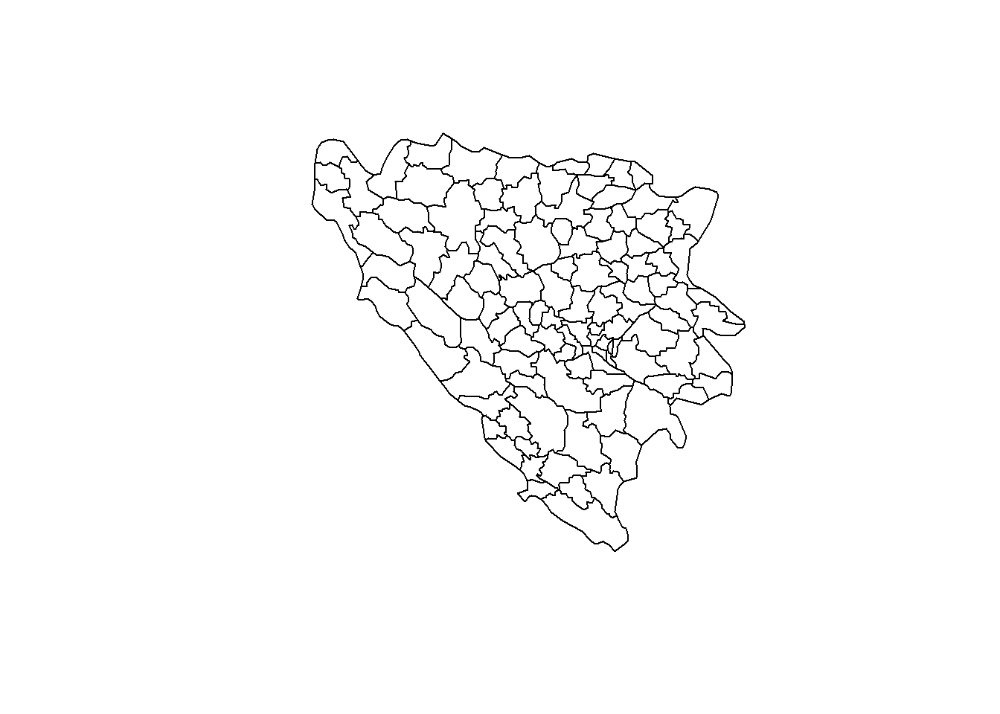

Now that we know what spatial data looks like, how do we actually work with it in R?
There are two main ways to read spatial in R: (1) reading point data from a regular data file (e.g. .csv or .xslx) and converting it into a spatial data frame or (2) reading “shapefiles,” the name for a collection of data files that represent some spatial feature, such as polygons.
Let’s look at both ways in more detail. I’ll be using the example from Nils Weidmann’s book in which we try to figure out how many conflict events took place in which Bosnian municipalities during Bosnia and Herzegovina’s civil war in the 1990s. Essentially, we want to find out how conflict intensity varied across the country.
Important packages
We will be using the sf package (short for “simple features”) to read and manipulate spatial data. You can install it with install.packages(sf) and then load it with library(sf) before you start working with it. It’s good practice to call the library(sf) package at the beginning of your script, right after you’ve loaded library(tidyverse) to access the tidyverse packages.
The sf integrates nicely with the tidyverse packages and philosophy of tidy data. You can learn more about the package and look at examples here. You can learn more about the package here.
Reading point data
The point data in this example are conflict events. In this dataset, each observation (i.e. each row) refers to a distinct event in space and time during which lethal violence took place, either between a government and rebel organizations, or between governments (or rebels) and civilians.
The data comes from the Uppsala Conflict Data Program (UCDP) Georeferenced Event Database (GED), or GED data for short. This data contains one of the most comprehensive collections on human violence during armed conflict world wide and is based at Uppsala University, Sweden. You can learn more about the data here.
Data download: point data
Download the ged.csv data set here (using right click => save as…). Ideally, you create a new RStudio project, including the separate data and code subfolders for all the spatial data exercises we’re going to perform in this chapter.
Here is how we read the data and how the dataset looks like:
library(tidyverse)library(sf)# reading the data using read_csv() from the tidyverseged <-read_csv("../data/spatial_data/datasets/ged.csv")# looking at the first couple of rowsged
Each row has an event ID, a start date, latitude & longitude (i.e. coordinates that tell us where the event happened) and the column best which is the data collectors’ best estimate how many people were killed during that event. In this example each row is an event that is represented by a point, other examples for point data could be cities, polling stations, mountain tops, football stadiums, etc.--anything that can be meaningfully simplified as a point geographically.
Simplified example!
Note that the original data has many more columns that provide information about a host of other features of a conflict event, such as sides to the conflict, end of the event (sometimes events last longer than a day), etc.. These columns are removed here for educational purposes and to make the example a bit simpler. The data is also already subset to events that took place in Bosnia and Herzegovina, whereas the full dataset spans all countries in which armed conflicts occurred. You find the original data here.
So far the data above is just like any other regular dataset that you’ve worked with before. But is has stored geographical information in the longitude and latitude columns. Those columns are coordinates, telling us where on the globe the event happened.
Before we can work with this data in any spatially meaningful way, we need to tell R that the coordinates contain spatial information. We need to transform the data frame into a “spatial data frame.”
Converting point data into a spatial data frame
To convert the ged data frame into a spatial data frame we use the st_as_sf() command:
There’s a couple of things going on in that command:
First you’ll see that we’re using the pipe %>% command to manipulate the data set just like we would use it in the tidyverse using mutate() for example.
The coords = argument takes the names of the longitude and latitude columns as argument. Note that the longitude column always comes before the latitude column.
The crs = 4326 argument assigns the coordinate reference system. The number 4326 is the name of the WGS 84 coordinate reference as specified by the European Petroleum Survey Group, an organization that classifies and defines different coordinate reference systems. Point data almost always comes in the WGS 84 CRS, so you usually add the crs = 4326 argument when you convert regular data frames into spatial data frames.
How does st_as_sf() change the ged dataset? Let’s have a look:
The output above now tells us that the data frame is a spatial data frame through the title “Simple feature collection.” It also tells us that this is a POINT data frame, which is useful (remember the different types of spatial data we encountered in the previous section. Finally the output shows that the data frame now has a geometry column. As we learned in the previous section, this indicates that we now are working with a “spatially enhanced” version of the GED conflict event data frame.
But did it actually work? It is always a good idea to visually check whether converting the data frame into a spatial data frame actually worked. We can do that by simply running the following line. The st_geometry() reduces the data set only to its spatial information, i.e. the points and their location in space, which is what we want.
ged %>%st_geometry() %>%plot()

This looks pretty decent! We have several points that cluster in space, which is what we would expect. There are more advanced ways to plot this, which we will learn about in the next chapter.
Reading polygons from shapefiles
Our original goal was to identify the geographical variation in Bosnia and Herzegovina’s municipalities, i.e. their smalles administrative unit. Administrative units, such as municipalities, federal states, Norwegian kommuner, or countries, are usually displayed and stored as polygons as we’ve discussed in the previous section..
A shapefile actually consists of several distinct files that, taken together, store spatial information. Usually it makes sense to save the entire shapefile(s) as a subfolder in your ./data subfolder in your RStudio project folder.
Data download: shapefile
Download the bosnia_shapefile.zip data set here (using right click => save as…). Save the .zip file in your ./data/ subfolder in your RStudio project that you use for your spatial analyses. Unzip the archive into a subfolder ./data/bosnia_shapefile/. This folder has all the files that belong to the shapefile for Bosnia.
Now, let’s read the shapefile into R using the st_read() command:
library(sf)# read the shapefile with st_read()bosnia_shp <-st_read("../data/spatial_data/datasets/bosnia_shapefile/bosnia.shp", crs =4326)
st_read() works a lot like read_csv() or any of the other data reading functions you’ve probably seen before.
You’ll notice that we’ve added the crs = 4326 argument to the st_read() command. We need to do this because in this particular case, our shapefile does not already have a pre-specified CRS and we know that it is WG 84 (which has the EPSG code 4326).
Often, shapefiles come with a pre-specified CRS, however. You can notice this, when you look into the shapefile folder, e.g. data/bosnia_shapefile/ in this example case. When there’s a file that ends with .prj in this folder, alongside the other files, then you have a CRS pre-specified and you don’t need the crs = ... argument.
It’s already a spatial data frame as indicated by the modified output, saying that we have Simple feature collection.... No transformation necessary! That’s because st_read() automatically knows that a shapefile is a spatial format.
We see that each observation represents a municipality, as indicated by the name column.
Again, we have a geometry column which stores the spatial features. In contrast to the points data set above, this column now stores a lot of points (which are omitted from the output), indicating the boundaries of the shape or polygon of each municipality.
It seems like reading the shapefile worked, but it’s always better to visually confirm. So we run the code below in the R console. The code says that we take the bosnia_shp object, hand it over (%>%) to the st_geometry function to only keep the spatial outline and then hand that outline over (%>%) to the plot() function.
bosnia_shp %>%st_geometry() %>%plot()

This looks good!
As a final check, we can plot both the points data (conflict events) on top of the Bosnian municipalities polygons. The code below does this and gives you a small glimpse into how we can create maps in R–a topic we’ll return to in a later session.
We use ggplot() to do this, a function you’re familiar with from earlier sessions and the special geom_sf() function that works very similar to other geoms such as geom_point() or geom_line().
Again, looking good! You’ll learn more about how to make maps with ggplot in the subsequent chapters.
Next steps
Now that we have both the conflict events data (ged) and the spatial data on the Bosnian municipalities (bosnia_shp) we can continue with our initial research question: which municipalities were the most violent ones? Or, put differently, how many violent events took place in which municipality?
To answer this question, we need spatial joins, the topic of the next chapter.